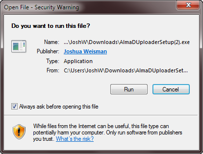
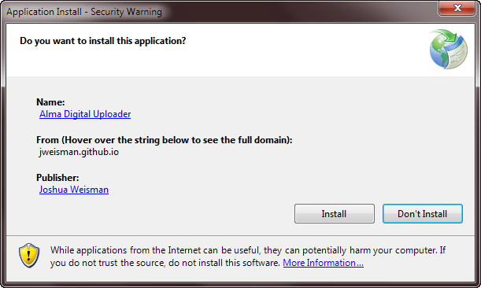
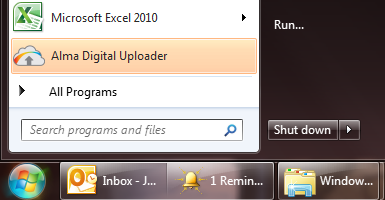

	<div class="row">
        <div class="col-lg-12">
        <h1>Download</h1>
        <p>Click the button below to download and install the Alma Digital Uploader</p>
        <p>
          <a class="btn btn-primary btn-lg" href="publish/AlmaDUploaderSetup.exe" onclick="_gaq.push(['_trackEvent', 'Downloads', 'AlmaDUploaderSetup.exe']);">
          <i class="fa fa-download fa-2x"></i>&nbsp;&nbsp;Download & Install</a>
          </p>
		<p>The Alma Digital Uploader runs on Windows 7 or 8.</p>
		<h2>Installation Instructions</h2>
		<h3>Windows 7</h3>
		<p>Click the button above to download the AlmaDUploaderSetup.exe file.</p>
		<p>Run the AlmaDUploaderSetup.exe from your download folder. When prompted, agree to run the file.</p>
		
		<p>When prompted, agree to install the application.</p>
		
		<p>The application will download and install. Once complete, it will open automatically.</p>
		<p>To open the application later, use the shortcut in your Start menu.</p>
		
		<h3>Windows 8</h3>

		<p>Instructions for installing on Windows 8.</p>
        </div>
    </div>
